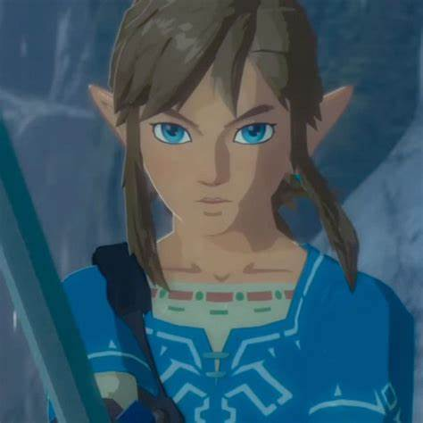

CURRICULO - LINK | |
|  | |
|---|---|
| Nome | Link |
| Cidade | Reino de Hyrule (localização atual: Castelo de Hyrule) |
| Formação Acadêmica | -Treinamento Real de Cavaleiro de Hyrule -Estudos em Tradições Antigas e Magia Sagrada |
| Experiência Profissional | -Herói do Tempo (Ocarina of Time) -Espadachim Real (Breath of the Wild). -Explorador e Solucionador de Enigmas |
| Cursos Complementares |
-Curso intensivo de uso da Master Sword - Curso de equitação com Epona -Curso de sobrevivência e culinária no mato -Curso de escalada, parapente e navegação com Sheikah Slate |